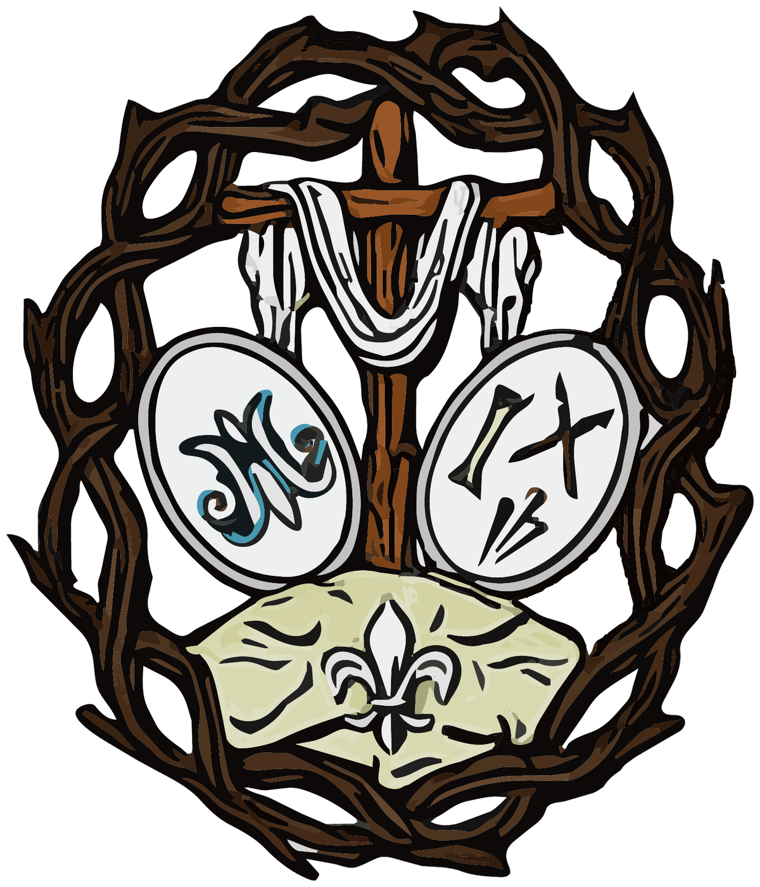

Fe · Lealtad · Pureza
Una hermandad
para
Cáceres
Culto, formación y caridad desde la Parroquia de Nuestra Señora del Rosario de Fátima.

Nuestra Hermandad
Tradición viva.
Compromiso presente.
Una comunidad abierta que vive y comparte la fe desde el corazón de Cáceres.
Conoce nuestra historia, nuestros Titulares y la vida de una corporación sostenida por el culto, la formación y la caridad.
Descubrir la Hermandad →Hermandad
Historia, gobierno, reglas y hábito nazareno.
02Titulares
Devoción, iconografía y patrimonio.
03Cultos y agenda
Calendario anual y vida de Hermandad.